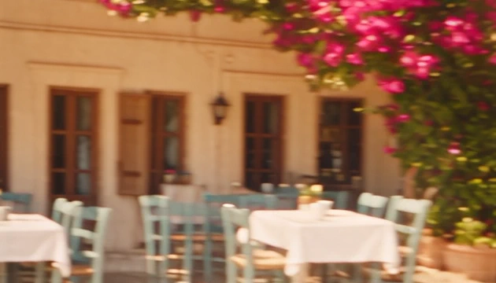
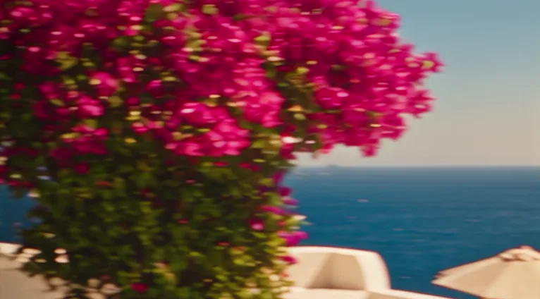
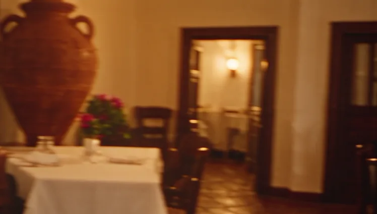
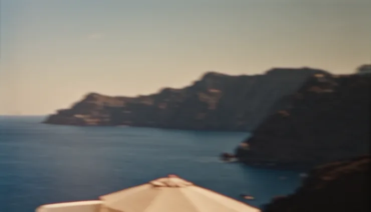

Photography
Rooms, terraces, tables and details, shot through golden and blue hour.
- Edited stills for web and booking platforms
- Print-resolution masters
Direction: a darkroom and a white terrace at sunset. Ink and cream do the work; brass is the light on the film edge; bougainvillea is the one warm accent, used sparingly.


#141215#F6EFE4#FBF8F2#C79A5B#C8246C#1E3A4C#2A1621#B4552FWe photograph and film hotels, restaurants and villas across the Cyclades, so guests fall for the place before they book.
01 / 03 · Frame labels
Inline link: write to hello@tapesway.example or read how a shoot works.
Captions on the film strip sit in the dark below it, cream on ink, with a brass frame index.

Rooms, terraces, tables and details, shot through golden and blue hour.

Low sun, warm whites, deep blue sea. Colour stays true; no heavy grading.

Interiors in tungsten warmth; amphora terracotta is the only strong earth tone.

Frames are presented as film: sprocket edges, ink borders, mono captions.